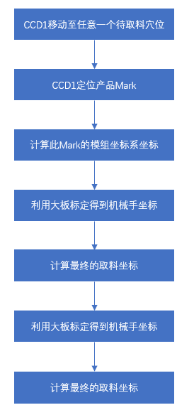
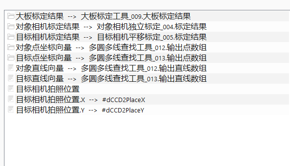
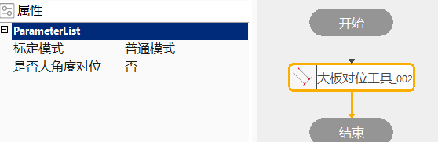

配合大板标定工具使用，实现较高精度的多穴位取料。
参见大板标定工具应用场景
在完成大板标定后，可以根据标定结果计算出图像中任意一点在机械坐标系下的坐标值，由此，当目标和对象需要进行对位计算时，分别由两个相机采集目标和对象的图像，并计算待重合点的机械坐标值，从而计算出运动机构需要移动的偏移量。有关大板标定的原理请参考大板标定工具手册，有关对位计算原理请参考通用对位计算工具手册。
下面以双相机多穴位小视野双机构场景为例说明使用大板对位工具取料流程和原理。目前有3组转换关系：CCD1平移标定M1、CCD2独立标定M2、大板标定T，根据三个标定结果实现取料引导。

读取此时模组的坐标值（X1，Y1）。提醒：此X1 Y1表示CCD1视野中心处的位置
利用M1，得到Mark的平台坐标（原点在CCD1视野中心）值（x1，y1）。
X ’= X1 + x1；Y ’= Y1 + y1
利用T，将（X’，Y’）转换到机械手坐标系下，得到机械手坐标值（X’’，Y’’）。提醒：此时机械手移动到（X’’，Y’’）处，其末端旋转中心刚好能和物料对齐，而非吸笔能对齐。
根据吸嘴的平台坐标值，得到吸嘴想要对齐物料所需要移动的偏移量（x, y,d），然后将其加到（X’’，Y’’）上，即可得到机械手最终的取料坐标。
利用T，将（X’，Y’）转换到机械手坐标系下，得到机械手坐标值（X’’，Y’’）。提醒：此时机械手移动到（X’’，Y’’）处，其末端旋转中心刚好能和物料对齐，而非吸笔能对齐。
根据吸嘴的平台坐标值，得到吸嘴想要对齐物料所需要移动的偏移量（x, y,d），然后将其加到（X’’，Y’’）上，即可得到机械手最终的取料坐标。
我们再对最后一步做一个说明：
1）当CCD2完成独立标定后，可以执行一次吸嘴训练，即将机械手移动到CCD2的拍照位，利用标定结果得到吸嘴的平台坐标（x, y, d）
2）由前面的步骤可知，当机械手移动到（X’’，Y’’）处，其末端旋转中心刚好能和物料对齐，即此时物料的平台坐标为（ 0, 0, θ）
3）使用对位的思路计算 (x, y, d) 和 (0, 0, θ) 之间的对位计算结果(∆x, ∆y, ∆θ), 此时机械手最终的取料坐标为 (X’’ + ∆x, Y’‘ + ∆y, ∆θ)

对象相机标定结果一般链接能完成12步独立标定的标定结果，目标相机标定结果一般链接平移标定结果；对象点坐标向量，目标点坐标向量，对象直线向量，目标直线向量，与通用对位计算工具参数链类型一致；目标相机拍照位置链接在定位目标时，模组或者机械手的位置。

标定模式
共包含2种模式：普通模式和靶标模式。普通模式需要机构取放过程中记录目标相机和辅助相机Mark点，然后链接到工具执行计算。靶标模式是在机构取放过程中内部记录坐标
是否大角度对位
根据场景选择是否为大角度。
| 参数名称 | 参数说明 |
|---|---|
| 当前穴位索引 | 当前穴位索引 |
| 大板标定结果 | 目标和对象机械坐标标定结果 |
| 靶标标定结果 | 目标相机靶标标定结果 |
| 对象相机标定结果 | 链接负责采集对象图像的相机标定结果 |
| 目标相机标定结果 | 链接负责采集目标图像的相机标定结果 |
| 对象点坐标向量 | 链接对象的特征点数组 |
| 目标点坐标向量 | 链接目标的特征点数组 |
| 对象直线向量 | 链接对象的特征直线数组 |
| 目标直线向量 | 链接目标的特征点数组 |
| 参数名称 | 参数说明 |
|---|---|
| 标定模式 | 普通模式和靶标模式，具体参见上一章节 |
| 是否大角度对位 | 是否是大角度 |
| 参数名称 | 参数说明 |
|---|---|
| 对位计算结果X | 机械手走位坐标X |
| 对位计算结果Y | 机械手走位坐标Y |
| 对位计算结果D | 机械手走位坐标D |
| 对象平台坐标 | 根据输入的对象图像坐标和对象标定结果，计算对象的平台坐标 |
| 目标平台坐标 | 根据输入的目标图像坐标和目标标定结果，计算目标的平台坐标 |
| 对象平台角度 | 根据输入的对象图像坐标/图像直线和对象标定结果，计算对象的平台角度 |
| 目标平台角度 | 根据输入的目标图像坐标/图像直线和目标标定结果，计算目标的平台角度 |
| 执行结果 | 工具的执行结果 |
| 执行时间 | 工具的执行时间 |
| 参数名称 | 参数说明 |
|---|---|
| 对位计算结果X | 机械手走位坐标X |
| 对位计算结果Y | 机械手走位坐标Y |
| 对位计算结果D | 机械手走位坐标D |
| 对象平台坐标 | 根据输入的对象图像坐标和对象标定结果，计算对象的平台坐标 |
| 目标平台坐标 | 根据输入的目标图像坐标和目标标定结果，计算目标的平台坐标 |
| 对象平台角度 | 根据输入的对象图像坐标/图像直线和对象标定结果，计算对象的平台角度 |
| 目标平台角度 | 根据输入的目标图像坐标/图像直线和目标标定结果，计算目标的平台角度 |
参见“\Samples\大板标定工具.gvp” 。